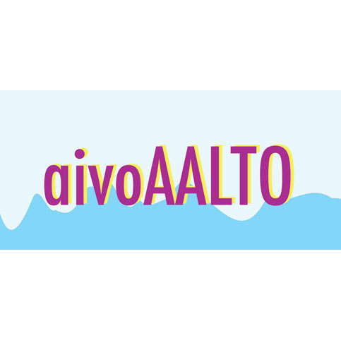

Last updated
25.04.2015
25.04.2015

Dmitry Smirnov
Doctoral Candidate, Brain & Mind LaboratoryDepartment of Neuroscience and Biomedical Engineering
Aalto University School of Science
P.O. Box 12200; FI-00076 AALTO, FINLAND
Room F326, Rakentajanaukio 2 C, FI-02150 Espoo
email: dmitry.smirnov [at] aalto.fi
|
@dmismirnov on LinkedIn @smirnod1 on our lab's git |
Research Interests
Social cognition and cognitive neuroscience - my current research interests revolve around information exchange between individuals. Together with my colleagues, I address this topic in various domains, for example, understanding speech depending on availability of contextual information, production of and listening to emotional speech, action understanding and vicarious pain. I'm interested in finding out, how similar is the brain representation of what we actively do (motor actions), feel (touch) and express (emotions), compared to what happens in the brain when we observe, empathize and listen to others. I use fMRI combined with pseudo-hyperscanning experimental paradigm and machine-learning methodology to address those questions. It's exciting to discover how similar is brain activity of two interacting individuals.
Naturalistic stimulation in brain research - during my first steps in psychological science, I felt that basic and simplified stimulation lacks the ability to catch complex relationships between various cognitive functions in real environment. In my current research, if the task requires addressing complex reality, I prefer using naturalistic stimuli. I'm grateful to my colleagues for the methods and insights they share regarding naturalistic stimulation paradigms.
Computational methods in neuroscience and psychoinformatics - I often procrastinate by coding. With the increase in amount and pace of data acquisition in every domain of science, basic data analysis skills and statistical knowledge become crucial for any individual who gets involved in science. Aalto University environment in general, and my colleagues in particular provide great encouragement for learning these skills. I'm always happy to share the bits of analytic skills and knowledge I have and learn new tricks in data analytics. I use a lot of machine learning these days, and some bits of bayesian statistics. For scientific computing I'm mostly using MATLAB, Python, Bash and R. Thanks to Science-IT project, I got spoiled by having access to Triton computational cluster, which allows me to parallelize all of my computational pipelines and effectively reduce calculations that used to take weekend to accomplish to merely half an hour of lunch time. For experiment presentation scripting I use Presentation software, developing both simple and more sophisticated interactive applications (so far one-armed-bandit game is my apex).
About me
I graduated in Engineering Psychology (MSU, 2009). During my last years of studies I worked as research assistant (2007-2009) in Work Psychology Laboratory. My research topic being: “Dynamics of human functional states while solving different computer- based tasks”. I also participated in research on RFBR (Russian Foundation for Basic Research) project “Microstructure of cognitive actions in consecutive and recursive performance of computerized tasks”. This work involved analysis of video data and patterns of eye movements to study the strategy of solving tasks in task-switching situations.
During 2010 I was working in computer game enterprise Innova Systems in AION project. Lots of challenging and exciting tasks, but eventually turn to academic career sounded so exciting, that I applied for doctoral student position in Aalto University, Finland.
Since 2011, I have been working as a PhD candidate in Brain & Mind Laboratory, BECS, Aalto University.
Selected publications, talks and activities
Peer reviewed journals
-
Smirnov D, Glerean E, Lahnakoski JM, Salmi J, Jääskeläinen IP, Sams M, Nummenmaa L (2014)
Fronto-parietal network supports context-dependent speech comprehension.
Neuropsychologia doi:10.1016/j.neuropsychologia.2014.09.007 -
Nummenmaa L, Smirnov D, Lahnakoski JM, Glerean E, Jääskeläinen IP, Sams M, Hari R (2014)
Mental Action Simulation Synchronizes Action-Observation Circuits Across Individuals.
Journal of Neuroscience doi:10.1523/JNEUROSCI.0352-13.2014
International meetings
- Smirnov D, Lachat F, Peltola T, Lahnakoski JM, Koistinen OP, Glerean E, Vehtari A, Hari R, Sams M, Nummenmaa L. Hyperclassification reveals shared representation of physical and vicarious perception of touch and pain across two brains. Poster at Alpine Brain Imaging Meeting, Champery, Switzerland, 11.-15.01.2015, pdf.
- Smirnov D, Lachat F, Glerean E, Lahnakoski JM, Hari R, Sams M, Nummenmaa L. Hyperclassification reveals shared representation of action execution and observation across interacting brains. Talk at Alpine Brain Imaging Meeting, Champery, Switzerland, 12.-16.01.2014.
-
Smirnov D, Glerean E, Lahnakoski JM, Salmi J, Jääskeläinen IP, Sams M, Nummenmaa L. Inferior Frontal Gyrus Subserves Context-Dependent Comprehension of Spoken Narrative
Poster at 18th Annual Meeting of the Organization for Human Brain Mapping, Beijing, China, 10.-14.06.2012. -
Nummenmaa L, Smirnov D, Lahnakoski JM, Glerean E, Jääskeläinen IP, Sams M, Hari R. Mental Simulation of Natural Movements Synchronizes Action Observation Circuits Across Individuals
Poster at 18th Annual Meeting of the Organization for Human Brain Mapping, Beijing, China, 10.-14.06.2012. - Lachat F, Smirnov D, Glerean E, Lahnakoski JM, Hari R, Sams M, Nummenmaa L. Hyperclassification reveals shared representation of action execution & observation across 2 brains. Poster at 20th Annual Meeting of Organization for Human Brain Mapping, Hamburg, Germany, 8.-12.06.2014.
- Smirnov D, Lachat F, Glerean E, Lahnakoski JM, Peltola T, Koistinen OP, Vehtari A, Hari R, Sams M, Nummenmaa L. Hyperclassification reveals shared representation of action execution and observation across interacting brains. Talk at B&M Symposium. 11.-12.09.2014.
{kind=link}
{kind=link}
Teaching and organization
2012-2014 Course assistant, together with Heini Heikkilä at
Becs-114.5501 and Becs-114.5502: Experimental and Statistical Methods in Biomedical Research. Lectured by Lauri Nummenmaa.
2012-2013 Assistant organizer, BECS Coffee Seminar, Aalto University School of Science.
2012-2013 Assistant organizer, BECS Coffee Seminar, Aalto University School of Science.
Present affiliations

Past affiliations
Back to the top